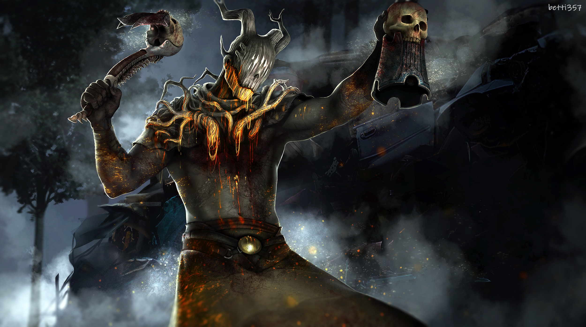
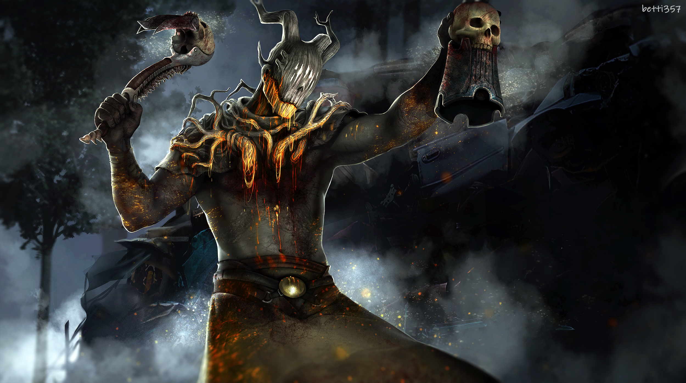
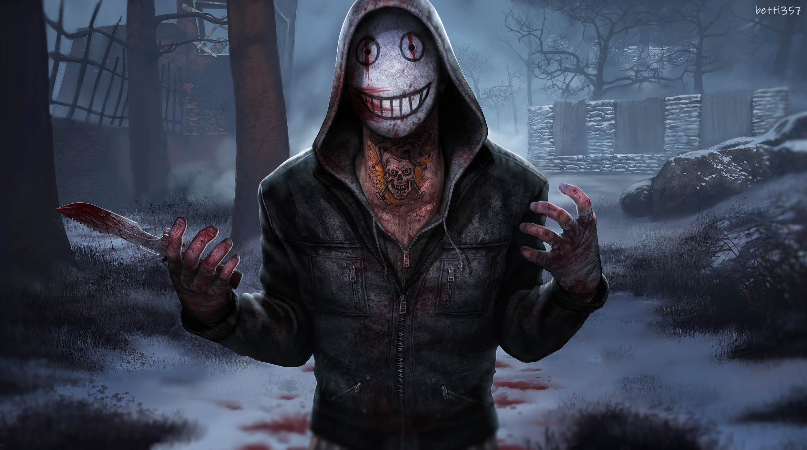

Dead by Daylight
Dead by Daylight a aparut in anul 2016 si il poti achizitiona de pe Steam cu 20$.
Gameplay: Ucigașul, în ciuda mersului într-un ritm rapid, este mai lent decât supraviețuitorii în majoritatea celorlalte mișcări: după ce a lovit un supraviețuitor, ucigașul își va încetini mișcarea pentru a șterge sângele de pe armă. Ucigașul este, de asemenea, mai lent în sărituri prin ferestre și nu poate sări peste paletele pe care supraviețuitorii le pot arunca în calea lor (cu excepția Legiunii), ci trebuie să meargă în jurul locului sau să petreacă ceva timp distrugându-le.
Ucigașul are, de asemenea, o abilitate de citire a aura, dezvăluind în permanență locația generatoarelor, a totemurilor hexagonale și (dacă transportă un supraviețuitor) cârligele de pe hartă. Un nou mecanic a fost adăugat în patch-ul 1.5.0, care a introdus „Bloodlust”. 15 secunde într-o urmărire, ucigașul primește un impuls de 0,2 m / s la viteza de mișcare de bază; 30 de secunde într-o urmărire îi oferă ucigașului un impuls de 0,4 m / s; și, în cele din urmă, dacă o urmărire durează 45 de secunde consecutive, ucigașul primește un boost de 0,6 m / s. Pofta de sânge durează doar până se termină o urmărire, după care creșterea vitezei de mișcare se va degrada cu o rată de 10% pe secundă petrecută fără a urmări un supraviețuitor, cu ruperea unui palet sau rănirea unui supraviețuitor îndepărtându-l complet.
Fiecare ucigaș are o abilitate secundară, numită putere ucigașă. Fiecare putere ucigașă este unică. De exemplu, Wraith poate „acoperi”, devenind invizibil și mișcându-se mai repede (dar fiind incapabil să lovească supraviețuitori în timp ce este ascuns), iar Hillbilly manevrează o ferăstrău cu lanț care îi permite să se repede rapid de-a lungul hărții și să doboare instantaneu supraviețuitorii cu care intră în contact. cu. Puterile pot fi mărite folosind suplimente, care sunt achiziționate pe site-ul de sânge folosind puncte de sânge, care sunt câștigate din joc.În calitate de supraviețuitor, jucătorii trebuie să scape din zona închisă, ceea ce se poate face într-unul din cele două moduri: fie reparând cinci din opt generatoare cu dizabilități pentru a furniza energie cutiei de comutare a celor două porți de ieșire care ies din terenul de încercare; sau prin evadarea prin trapă. Trapa se deschide când rămâne un singur supraviețuitor în proces. Supraviețuitorii vor avea nevoie de o cheie pentru a deschide trapa dacă există mai multe persoane în viață. Dacă ucigașul închide trapa înainte ca supraviețuitorul să ajungă la ea, Endgame Collapse va începe, oferindu-i supraviețuitorului doar două minute pentru a deschide una dintre porțile de ieșire înainte ca temporizatorul să se epuizeze sau să fie prinși de ucigaș. Opțiunile de mișcare ale supraviețuitorilor constau în sprint, mers, ghemuire sau târâtoare. Ei trebuie să scape de ucigaș pierzându-și viziunea într-o goană sau ascunzându-se cu succes de ei.
 

Când au de-a face cu ucigașul, supraviețuitorii pot face uz de o mână de obiecte - căutând cufere în interiorul clădirilor care uneori vor produce truse medicale (care permit supraviețuitorilor să se vindece singuri, mai degrabă decât să aștepte un coechipier), lanterne (care pot fi folosite pentru orbeste temporar ucigașul și salvează un supraviețuitor pe care îl transportă ucigașul), cutii de instrumente (care pot fi folosite atât pentru a repara generatoarele mai repede, cât și pentru a sabota temporar cârligele), chei (fac o varietate de lucruri în funcție de suplimentele lor și pot fi folosite pentru a deschide trapa) sau hărți (care urmăresc obiectivele și dezvăluie aurele lor). O resursă pe care supraviețuitorii o pot folosi sunt paleții masivi din lemn, care sunt așezați în poziție verticală și pot fi trasi în jos atunci când un supraviețuitor trece pe lângă ei - dacă ucigașul se află chiar în spatele supraviețuitorului, paletul îl va uimi momentan pe ucigaș dacă îi lovește cu succes.
Alte avantaje tehnice pe care le au supraviețuitorii includ capacitatea de a vedea aura colegilor de echipă doborâți și agățați - atrăgându-i astfel ușor la locul lor pentru salvare - și pot vedea în mod similar locațiile generatoarelor recent reparate și porțile de ieșire pentru o perioadă scurtă de timp. odată ce toate generatoarele necesare sunt reparate. Când ucigașul este aproape, supraviețuitorii vor auzi bătăi de inimă și, în cele din urmă, muzică tensionată, ambele crescând intensitatea cu apropierea de ucigaș. De asemenea, pot vedea o lumină roșie (numită „pata roșie”) emanată din capul ucigașului pe sol, care dezvăluie direcția spre care se confruntă.
Supraviețuitorii și ucigașii au fiecare opțiunea de a utiliza până la patru avantaje în încărcare, ceea ce conferă personajelor lor abilități speciale. Jucătorii pot avea doar câte unul din fiecare avantaj; de exemplu, un jucător poate avea două avantaje de epuizare, dar nu poate avea două din aceleași avantaje de epuizare. Acest lucru se aplică tuturor avantajelor, nu doar celor obosite, și este adevărat pentru ucigași și supraviețuitori.
Fiecare personaj începe cu un set de trei avantaje unice pentru ei și trebuie mai întâi deblocat de pe sânge la nivelurile 30, 35 și, 40 înainte ca celelalte personaje să le poată folosi. Aceste avantaje vizează în mod normal un anumit stil de joc pentru personajele respective și pot fi deblocate și actualizate în „Bloodweb” folosind „Bloodpoints” și fiecare Bloodweb poate deține 1-4 avantaje. Avantajele diferă între supraviețuitori și ucigași. Beneficiile pentru supraviețuitori pot varia de la a da o explozie de viteză atunci când aleargă de la ucigaș, până la posibilitatea de a se auto-vindeca fără o trusă de prim ajutor, până la deblocarea capacității de a sabota cârligele de carne fără o cutie de instrumente. Beneficiile ucigașilor pot varia de la a vedea aurele supraviețuitorilor, împiedicând timpul lor de luptă în timp ce sunt transportate și blocarea generatoarelor pentru a împiedica lucrul acestora. Există, de asemenea, o multitudine de avantaje „universale” care sunt disponibile pentru a fi utilizate de orice personaj.
Atât supraviețuitorii, cât și ucigașii pot debloca obiecte, avantaje, suplimente și oferte prin intermediul Bloodweb. Fiecare acțiune efectuată într-un proces acordă jucătorului un număr de Bloodpoints, iar suma se adaugă la totalul jucătorului la sfârșitul procesului. Fiecare nivel al Bloodweb-ului este un grafic generat procedural, care este mai mare la niveluri superioare de caractere. Recompensele sunt conectate între ele într-un copac radial, iar jucătorii trebuie să cumpere recompense de-a lungul căii de progresie pentru a avea acces la alții. Odată ce fiecare recompensă a fost achiziționată, Bloodweb va genera un nou nivel pentru ca jucătorul să progreseze, crescând nivelul acelui personaj. Odată ce personajul atinge nivelul 50, li se va oferi opțiunea de prestigiu. Deși li se oferă opțiunea, vor putea totuși să cumpere lucruri de pe Bloodweb, dar nu își vor crește nivelul. Odată prestigiat, un personaj își va reseta progresia și va primi una dintre opțiunile implicite de personalizare într-o variantă stropită de sânge. Se poate prestiga caracterul său de până la trei ori.
Bloodweb poate conține obiecte și suplimentele lor, oferte care pot fi cheltuite la începutul rundei pentru a influența condițiile procesului și avantaje care fac personajul mai puternic. Ofertele și suplimentele pot fi utilizate doar într-o singură probă, în timp ce obiectele pot fi refolosite până când jucătorul moare sau îl dă unui alt jucător. Obiectele pot fi achiziționate și din cufere plasate în jurul hărții de încercare, dar acest lucru nu afectează Bloodweb-ul personajului.